eSariSari
Franchise financial operations platform
Admin User Guide
Platform Admin · Financials Dashboard · Clients
A click-by-click walkthrough of the Admin franchise module: sign in, read the Financials Dashboard, confirm collections, open clients, and add a new client through the four-step onboarding wizard. Create Franchisee saves that client to this browser and shows it on the Clients list. Internet Credits, wallets, sales, and downline roles are covered in the separate User Guide — not in this document.
24 August 2026 · Demo environment
Download Admin User Guide Word copy · Open the Internet Credits User Guide
1. What this guide covers
Use this guide when you are signed in as Platform Admin. The Admin home page is the Financials Dashboard. Clients is the franchise portfolio and the entry point for onboarding.
| In this guide | Not in this guide |
|---|---|
| Financials Dashboard KPIs and Confirm Collection | Internet Credits loads, Direct Release, and deposit rates |
| Clients list, client details, and shared collection history | Recording a retailer demo sale or reading Sales Commission |
| Add New Client — Client Info, Franchise Setup, Revenue Split, Review | Sub-Franchisee, Franchisee, and Retailer day-to-day screens |
2. Sign in as Admin
The Admin demo account is marked Restricted on the Sign In page. Clicking a demo account fills the email only — you still type the password.
| Field | Value |
|---|---|
| admin@esarisari.local | |
| Password | abc12345678 |
| Other demo accounts | password123 |
- Open the app and stay on Sign In.
- Under Demo Accounts, click Admin (Restricted).
- Type abc12345678 in Password. Do not use password123 for Admin.
- Click Sign In.
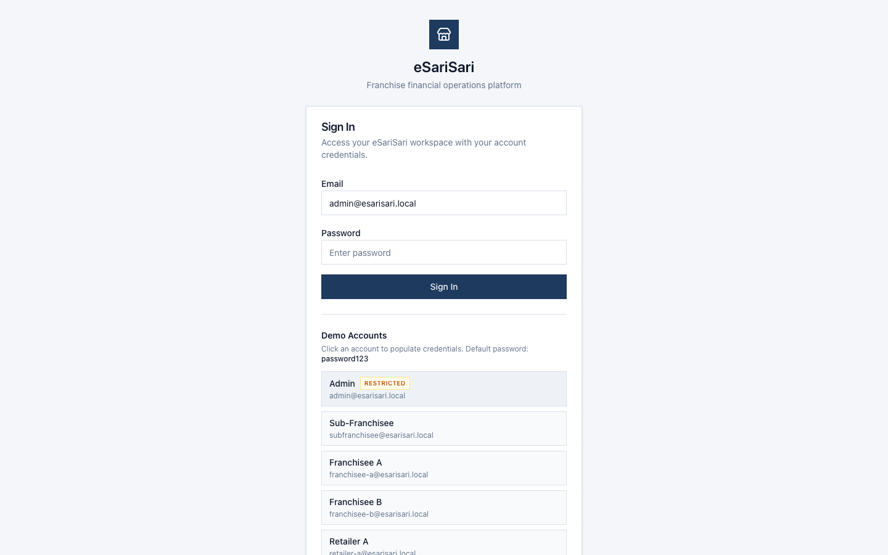
After a successful sign-in you land on Financials Dashboard. The sidebar for Admin is Dashboard, Clients, Wallets, Internet Credits, Deposit Rates, Commission Settings, Transactions, Revenue, and Reports. Franchises and Organizations are not in the sidebar.
3. Financials Dashboard
Dashboard is the Admin home. It tracks setup fees and monthly collections for the franchise portfolio — seeded demo clients plus any clients you register in this browser. Newly registered clients count under Pending Review. Open Franchise Setup in the page header jumps to onboarding step 1 (same wizard as Add New Client).
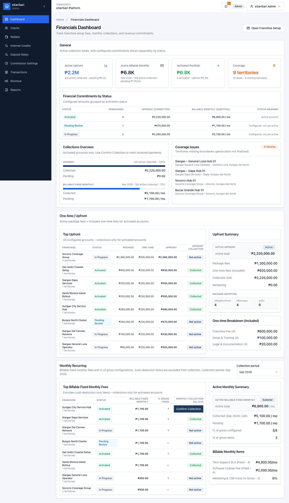
3.1 General KPIs
| Card | What it means |
|---|---|
| Active Upfront | One-time setup due from Activated clients, plus how many of those upfront items are already collected. |
| Active Billable Monthly | Fixed monthly fees due from Activated clients for the selected month. Cost-deduction-only and % of gross sales items are not in this billable total. |
| Activated Portfolio | Count of Activated clients and their configured upfront / monthly commitments. |
| Coverage | Territory and area count across the portfolio, including territories still missing a boundary. |
Financial Commitments by Status groups the same configured amounts by activation status (Activated, Pending Activation, In Progress, Pending Review). Only Activated accounts can receive Confirm Collection.
3.2 Confirm Collection
Collections Overview and the collections tables show Activated accounts only. Use Confirm Collection on an Upfront or Billable monthly row to record cash received.
- Stay on Financials Dashboard.
- Find an Activated row that still shows Confirm Collection (not the Collected badge).
- Click Confirm Collection.
- For upfront: enter the amount collected. Partial payments are saved. The row is marked Collected only when the full upfront amount is covered.
- For monthly: choose the start period if needed, enter the amount, then confirm. Extra cash can roll into later months.
- Click Confirm Collection in the dialog. Cancel leaves the ledger unchanged.
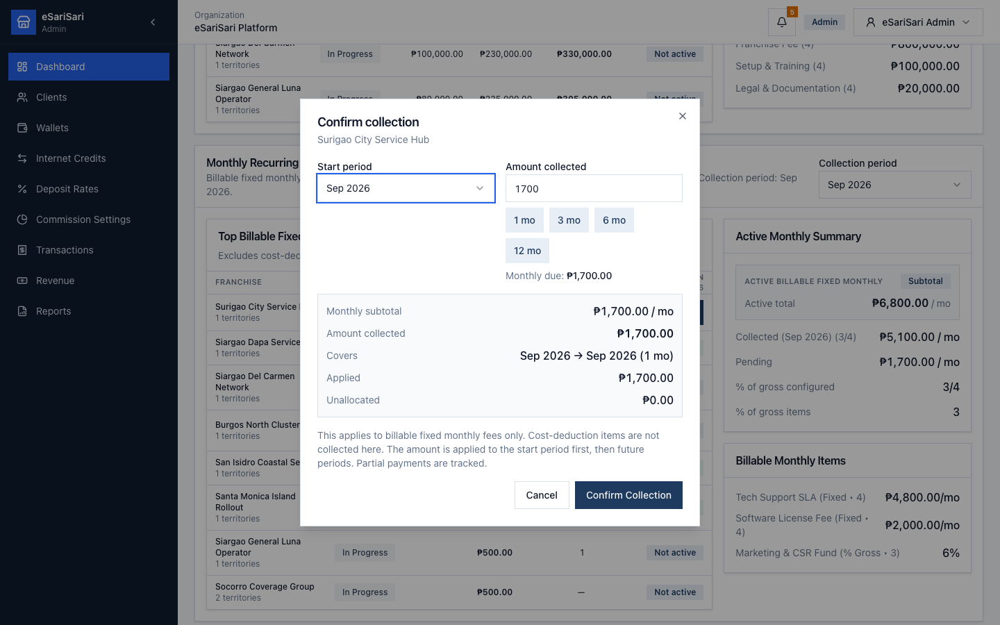
4. Clients
Open Clients in the sidebar. This is the franchise / sub-franchise portfolio: seeded demo rows plus any clients you create with Add New Client. Newly registered clients appear at the top as Pending Review. Seeded examples include Surigao City Service Hub (Activated Sub-Franchisor) and Siargao General Luna Operator (Franchisee, still in progress).
4.1 Client list
| Column | Meaning |
|---|---|
| Client | Display name and last-updated time. |
| Type | Sub-Franchisor or Franchisee. |
| Status | Activated, Pending Activation, Pending Review, or In Progress. |
| Territories | Count of assigned coverage territories. |
| Upfront Setup | Package unit fees plus enabled one-time fees. |
| Billable Monthly | Fixed monthly fees that are billed (excludes cost-deduction-only and % gross sales). |
| Revenue Split | Company % + this client %. A valid split shows 100%. Downline shares are not set by admin. |
- Click View on a row to open Client Details.
- Click Add New Client to start the onboarding wizard at Client Info (step 1).
4.2 Client Details
Client Details shows setup, fees, territories, the revenue-split math, and — for Activated clients — a financial history you can collect against. Clients you registered also show a Company Profile card (admin, company, contact, and address from step 1). Seeded demo rows do not have that card.
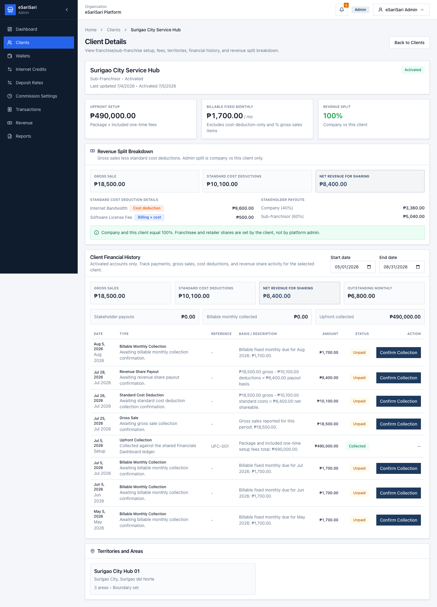
- Upfront Setup, Billable Fixed Monthly, and Revenue Split cards summarize the configured deal.
- Revenue Split Breakdown starts from a demo gross sale, subtracts monthly fees tagged as cost deductions, then applies the company vs this-client split to net revenue.
- Financial History (Activated only) lists unpaid and collected items. Confirm Collection here requires an amount and a payment reference.
- Use the date filters to narrow history. Back to Clients returns to the list.
4.3 Activate a client
Activation happens on Client Details. There is no separate activation page. Newly registered clients start as Pending Review. Seeded rows that are In Progress or Pending Review can be activated the same way.
- Open Clients and click View on a row that is not Activated.
- Click Activate Client in the page header, or in the Financial History empty state.
- Confirm Activate Client in the dialog.
- Status becomes Activated. Financial History appears, and Confirm Collection is enabled on this page and on the Financials Dashboard.
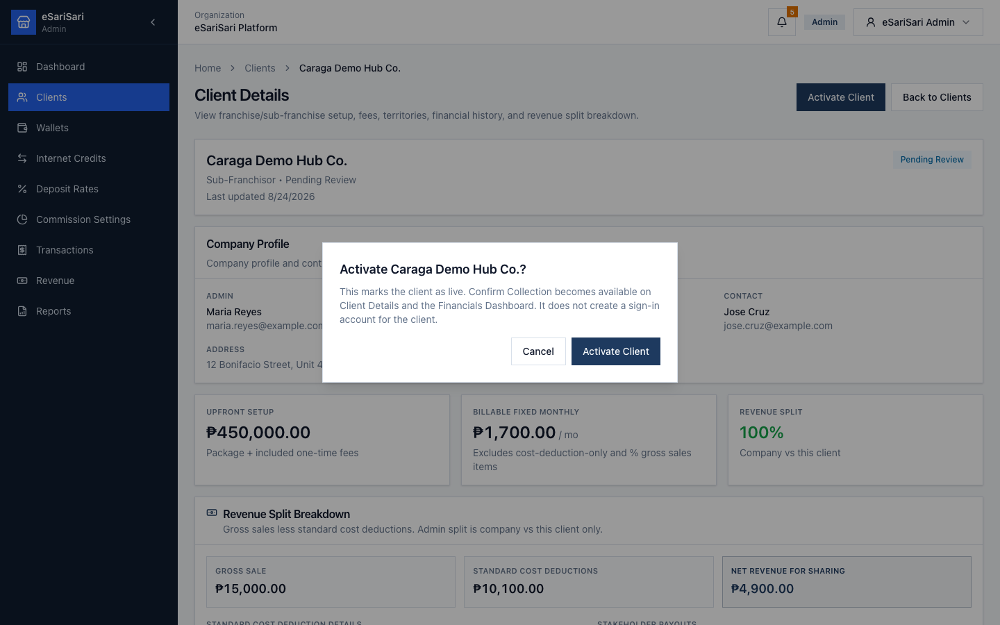
5. Add a new client (onboarding)
Onboarding is four steps. Each step saves a draft to localStorage as you type or change a control, so Back and Continue keep your place. Create Franchisee on step 4 writes the finished client into the Clients list. Reset Demo Data clears the draft and removes registered clients.
| Step | Screen | Saves |
|---|---|---|
| 1 | Client Info | Admin login, company profile, optional contact person |
| 2 | Franchise Setup | Client type, packages, one-time fees, monthly fees, territory |
| 3 | Revenue Split | Company vs this client only. Downline shares are not set here. |
| 4 | Review | Read-only summary, then Create Franchisee writes the client to the Clients list |
Start from Clients → Add New Client, or from Financials Dashboard → Open Franchise Setup. Both open step 1.
5.1 Step 1 — Client Info
Enter the client admin login, the legal company profile, and an optional operations contact. Continue to Step 2 is blocked until required fields pass validation.
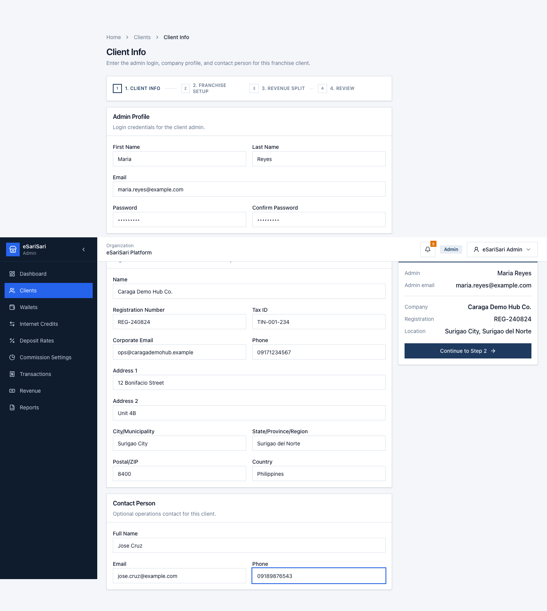
| Section | Required | Notes |
|---|---|---|
| Admin Profile | First name, last name, email, password, confirm password | Password must be at least 8 characters and must match confirm. |
| Company Profile | Name, registration number, corporate email, address 1, address 2, city, state/province/region, country, postal/ZIP | Postal/ZIP is 1–5 digits. Tax ID and company phone are optional. |
| Contact Person | None | Full name, email, and phone are optional. |
- Fill Admin Profile and Company Profile.
- Add a Contact Person if you have one.
- Click Continue to Step 2. Fix any red field messages before the wizard advances.
5.2 Step 2 — Franchise Setup
Choose whether this client is a Sub-Franchisor or a Franchisee, then configure packages, fees, and coverage.
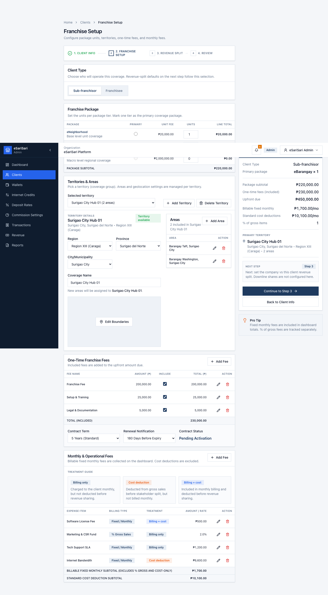
- Client type: Sub-Franchisor oversees franchisees in a territory. Franchisee operates units. This choice only changes the client label on step 3 (Sub-franchisor vs Franchisee).
- Packages: eNeighborhood (₱20,000 / unit), eBarangay (₱200,000 / unit), eLGU (₱2,000,000 / unit). Set quantity and a primary package.
- One-time fees default to Franchise Fee, Setup & Training, and Legal & Documentation. Toggle or edit amounts. Enabled fees roll into upfront due.
- Monthly operational fees can be Fixed monthly, % of gross sales, or cost deductions. Billable monthly on Dashboard / Clients excludes cost-deduction-only and % gross sales lines.
- Territory and areas assign coverage. A missing boundary is flagged on the Dashboard Coverage card for seeded clients.
- Select Sub-Franchisor or Franchisee.
- Adjust package quantities and the primary package if needed.
- Review one-time and monthly fees.
- Select a territory and areas.
- Click Continue to Step 3. Use Back to Client Info if you need to change the company record.
5.3 Step 3 — Revenue Split
Admin sets only the contract between eSariSari (company) and this client. Changing one percentage fills the other so the two always add up to 100%. Downline shares are not editable here.
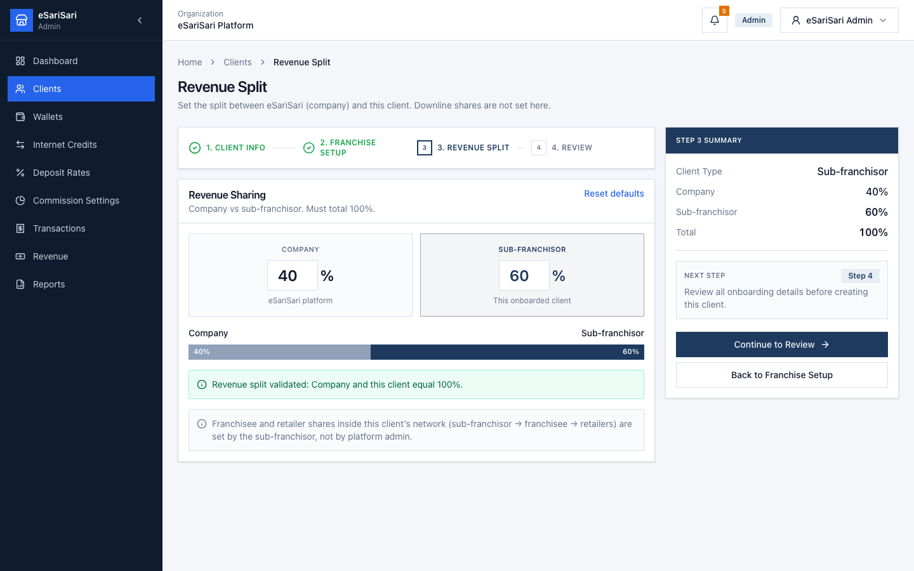
| Client type | Admin sets | Not set by admin |
|---|---|---|
| Sub-Franchisor | Company % and this sub-franchisor % | Franchisee and retailer shares (sub-franchisor → franchisee → retailers) |
| Franchisee | Company % and this franchisee % | Retailer shares (franchisee → retailers) |
- Edit Company or the client share. The other value updates so the total stays 100%.
- Default is Company 40% / client 60%. Use Reset defaults to restore that.
- Click Continue to Review.
5.4 Step 4 — Review
Review is read-only. Each card has an Edit link back to the step that owns those fields. Check client type, admin and company profile, packages, territory, fees, and the split bar.
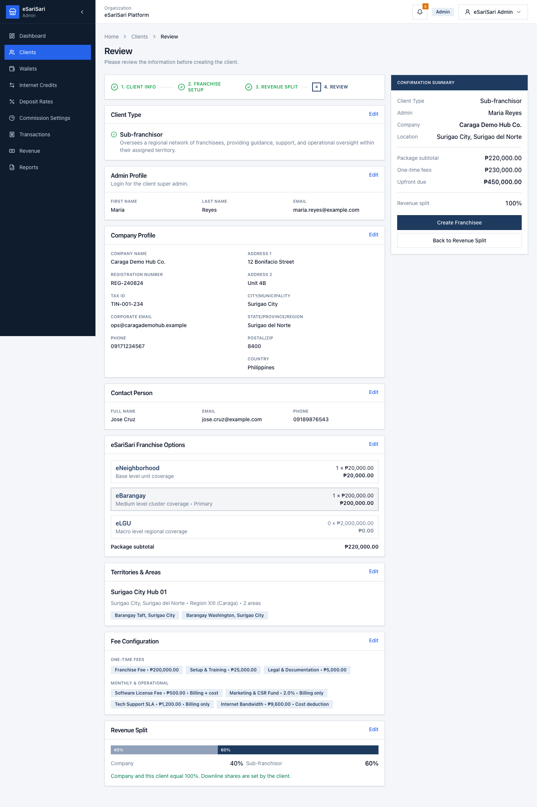
- Scan every card. Use Edit if a value is wrong.
- Click Create Franchisee.
- If Client Info is incomplete or the split is not 100%, fix the message and try again.
- The app opens Clients. Your new row is at the top as Pending Review.
- Click View on that row to confirm Company Profile and the rest of the setup.
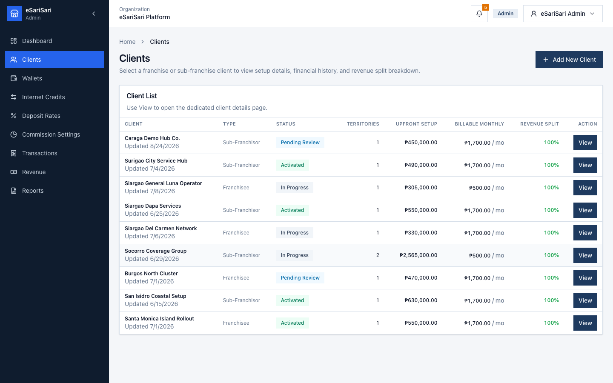
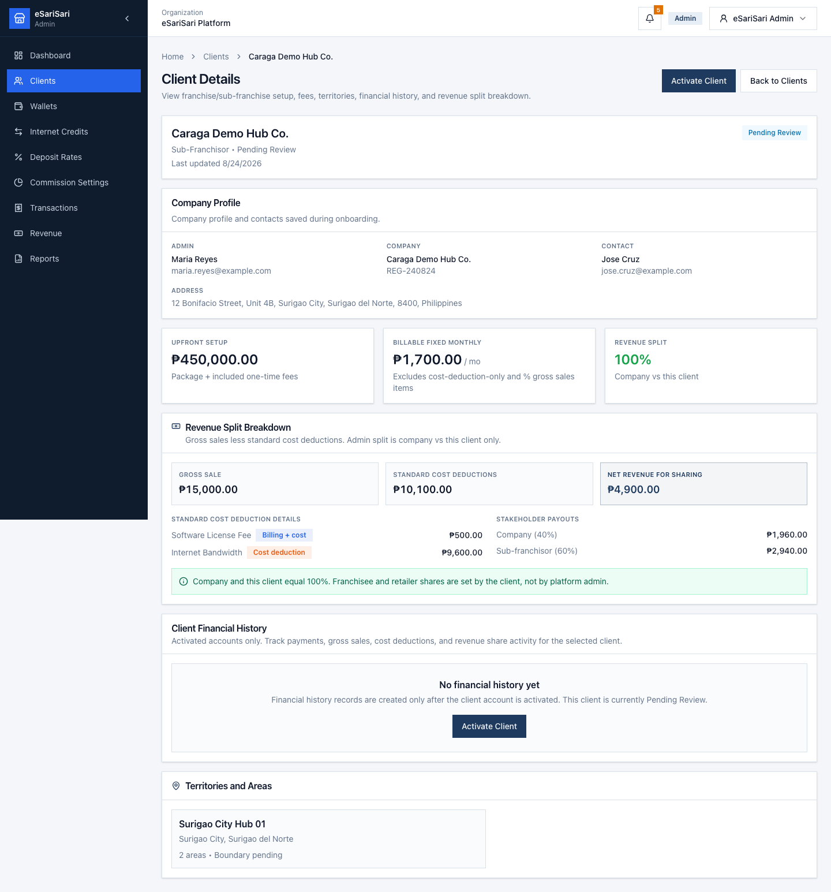
6. Reset Demo Data and logout
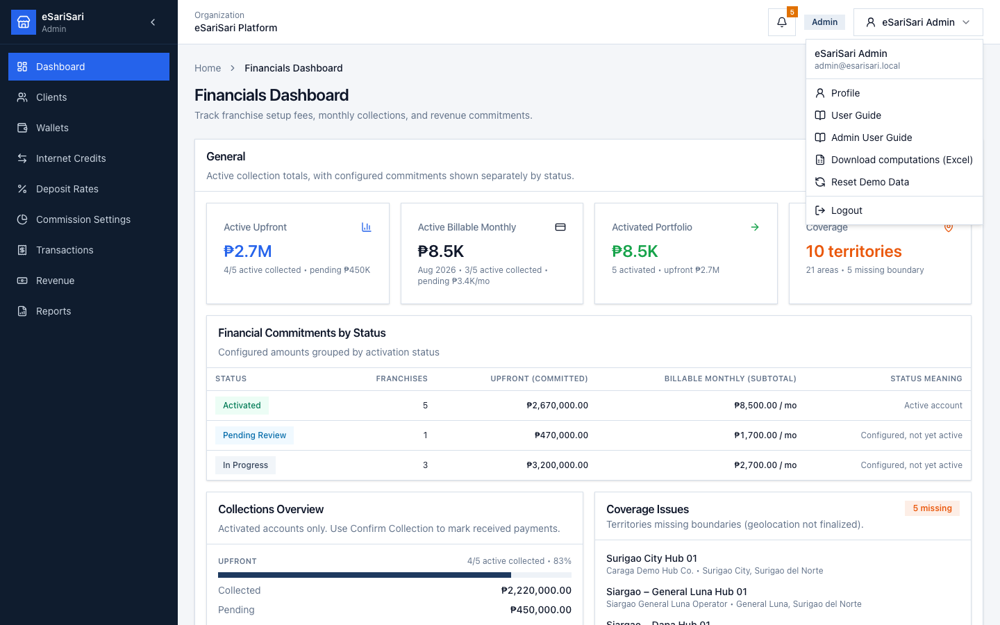
Open your name at the top right. Admin sees User Guide (Internet Credits) and Admin User Guide (this document), plus Download computations (Excel), Reset Demo Data, Profile, and Logout.
6.1 Reset Demo Data
Reset restores the seeded network, wallets, empty Internet Credits / sales history, the seeded client portfolio, and collection marks. It also removes clients you registered, clears activation overlays, and clears the onboarding draft (client info, franchise setup, and revenue split).
- Click your name at the top right.
- Click Reset Demo Data.
- Confirm Reset Demo Data in the dialog.
6.2 Logout
- Click your name at the top right.
- Click Logout.
- Sign in again as Admin, or use another demo account for the Internet Credits guide.
7. Field meanings
| Term | Meaning |
|---|---|
| Activated | Client is live. Dashboard and Client Details can Confirm Collection. Use Activate Client on Client Details to get here. |
| Upfront / one-time | Package unit fees plus enabled one-time franchise fees. |
| Billable fixed monthly | Monthly fees billed as a peso amount. Excludes cost-deduction-only and % of gross sales. |
| Cost deduction | A monthly fee subtracted from gross sales before the revenue split. |
| % of gross sales | A fee expressed as a percent of sales. Tracked on the client record; not in the billable monthly KPI. |
| Revenue split | Company + this client. Must equal 100%. Downline retailer / franchisee shares are set by the client. |
| Net revenue for sharing | Demo gross sale minus standard cost deductions. |
8. Common mistakes
- Using password123 on the Admin account — Admin is Restricted and uses abc12345678.
- Looking for Franchises or Organizations in the sidebar — those items were removed. Use Clients.
- Looking for franchise collections on Transactions, Revenue, or Reports — those pages are Internet Credits and sales only. Use Financials Dashboard or Clients.
- Expecting Confirm Collection on a non-Activated client — open Client Details and click Activate Client first.
- Treating Create Franchisee as a login for the new client — the company appears on Clients, but this demo does not create a sign-in account.
- Expecting the new client to stay off the Clients list — Create Franchisee now saves it and shows it at the top as Pending Review.
- Trying to set retailer or franchisee downline shares on step 3 — those belong to the client, not platform admin.
- Mixing this guide with Internet Credits work — loads, sales, and commissions are in the other User Guide.
- Using Reset Demo Data during a live collection walkthrough — it wipes payment marks, the onboarding draft, registered clients, and activation overlays.
This guide matches the eSariSari Admin module as of 24 August 2026. It does not replace the Internet Credits User Guide. Screenshots are layout references; live numbers depend on collections you confirm in this session.